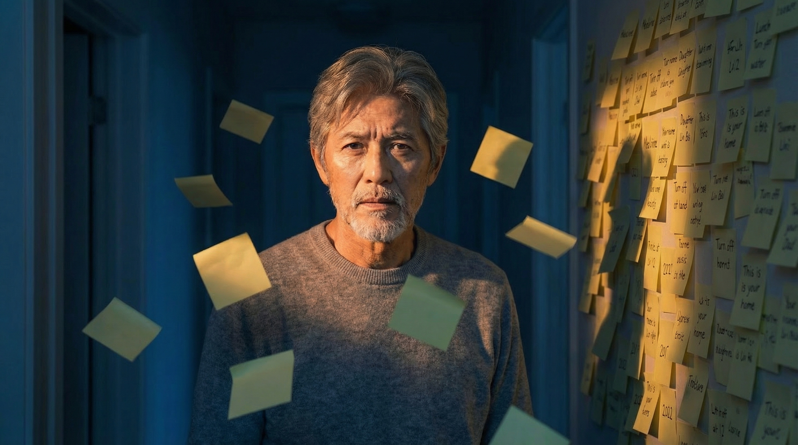
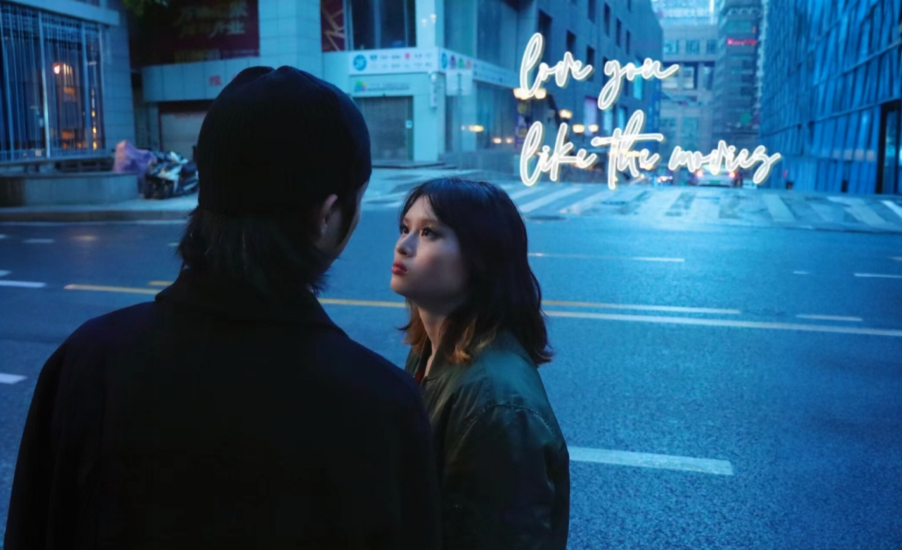
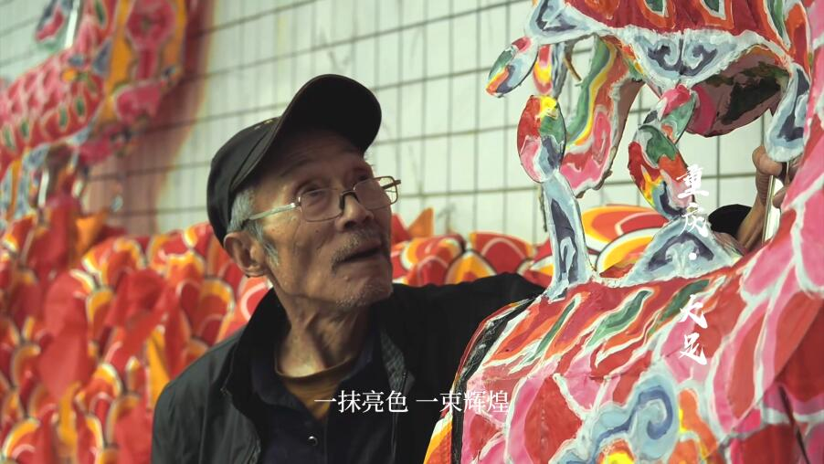
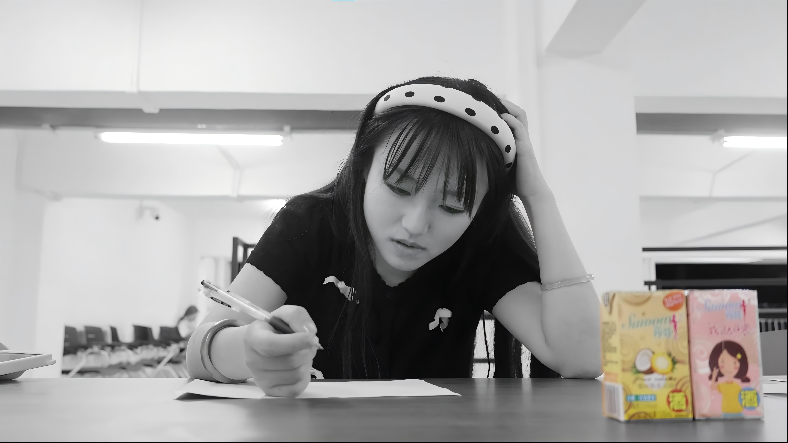
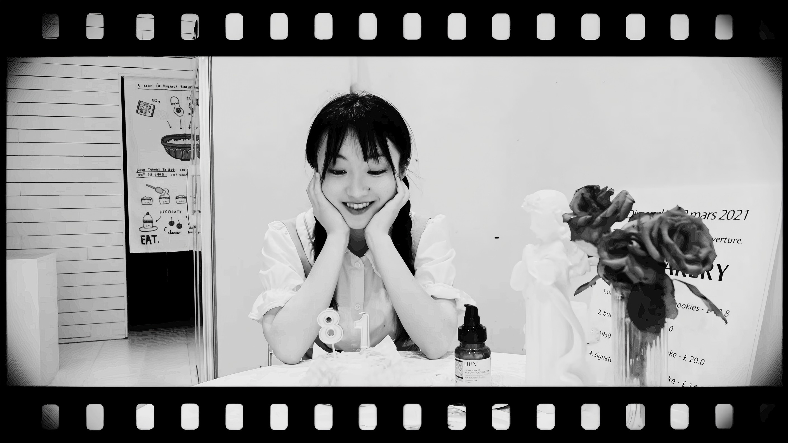

从商业短片到实验影像，从现实捕捉到AI生成，这里是我用光影和代码讲述的故事。








我毕业于重庆对外经贸学院，主修广播电视编导。电影是我与世界沟通的语言，而技术是我拓展这门语言边界的工具。
我对AI在影视创作中的应用充满好奇。从 Midjourney 的概念可视化，到 Pika 的视频生成，我相信技术正在重塑我们讲故事的方式。我热衷于将前沿的AI工具融入创作流程，探索人机协作的艺术新范式。
如果您也在探索视觉叙事的未来，期待与您交流。
期待与您交流项目合作、创意想法，或只是简单地聊聊电影与AI。